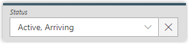

Customize Search Bars
This guide shows how to define a custom way to search from a list of a given entity type's properties.
See the Search Bar topic for additional information.
Default Search Bar
To search on a resource list for an entity, you must enter a SearchBar tag for the given entity.
<SearchBar EntityType="Directory_User" Menu="Menu_Search_Directory_User" SearchBarDesignElement="Inline"> <Criterion Binding1="MainRecord.EmployeeId" PlaceHolderText_L1="Employee Id" PlaceHolderText_L2="Matricule" InputType="Auto" ColumnSize="2" /> <Criterion Binding1="MainRecord.LastName" InputType="Auto" ColumnSize="2" /> <Criterion Binding1="MainRecord.FirstName" InputType="Auto" ColumnSize="2" /> <Criterion Binding1="MainRecord.Organization" PlaceHolderText_L1="Department" PlaceHolderText_L2="D�partement" InputType="Auto" ColumnSize="2" /> <Criterion Binding1="PresenceState" InputType="ComboboxMultiSelection" ColumnSize="2" /> <Criterion Binding1="MainRecord.Location" PlaceHolderText_L1="Site" PlaceHolderText_L2="Site" InputType="Auto" ColumnSize="2" IsVisibleInAdvancedView="true" /> <Criterion Binding1="MainRecord.Company" PlaceHolderText_L1="Company" PlaceHolderText_L2="Soci�t�" InputType="Auto" ColumnSize="2" IsVisibleInAdvancedView="true" /> <Criterion Binding1="MainRecord.Title" PlaceHolderText_L1="Title" PlaceHolderText_L2="Fonction" InputType="Auto" ColumnSize="2" IsVisibleInAdvancedView="true" /> <Criterion Binding1="MainRecord.EmployeeType.Category" PlaceHolderText_L1="User Type" PlaceHolderText_L2="Cat�gorie de collaborateur" InputType="Auto" ColumnSize="2" IsVisibleInAdvancedView="true" /> </SearchBar>
Here is the visualization of this searchbar on the interface:
Ergonomically, it is recommended to hide the search symbol in a column header (in a list displayed like a table) if a criterion linked to this column is already displayed in a searchbar. This avoids filter duplication.
Thus, the <CanBeFiltered> property can be deleted in the <Column> argument in the display table.
Create Default Filters
To add a default filter, you must add both of the following properties to a Search Bar:
- DefaultValue
- Operator
<Criterion Binding1="PresenceState" InputType="ComboboxMultiSelection" ColumnSize="2" DefaultValue="-101;-102" Operator="Equal" />
Here is the visualization of this criterion on the interface:

Search Bar Menu
Each menu item is a link to an entity's workflow displayed under the search bar on the visualization page of the entity's resource list.
See the Create Menu Items topic for additional information